It is well known that the error estimate from any MC calculations (or in general from a simulation) converges as 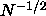 where N is the number of random samples or equivalently the computer time expended. Recently there has been much research into whether non-random sequences could result in faster convergence, but still have the advantages of MC in being applicable to high-dimensional problems.
Consider the integral:
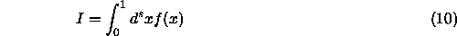
The Monte Carlo estimate for this integral is:
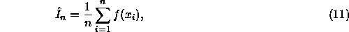
where the points 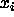 are to be uniformly distributed in the
s-dimensional unit cube. An important, and very general, result
that bounds the absolute error of the Monte Carlo estimate is
the Koksma-Hlwaka inequality [25]:
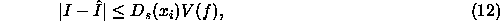
where 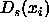 is the discrepancy of the points as
defined by Eq. ( ), and
V(f) is the total variation of f on 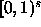 in the sense of
Hardy and Krause [38].
The total variation is roughly the average absolute value of the 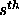
derivative of f(x).
), and
V(f) is the total variation of f on 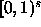 in the sense of
Hardy and Krause [38].
The total variation is roughly the average absolute value of the 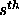
derivative of f(x).
Note that Eq. ( ) gives a deterministic
error bound for integration because V(f)
depends only on the nature of the function. Similarly,
the discrepancy of a point set is a purely geometric property of that point
set. When given a numerical quadrature problem, we must cope with whatever
function we are given, it is really only the points, , that we control.
Thus one approach to efficient integration is to seek
point sets with small discrepancies.
Such sets are necessarily not random
but are instead referred to as quasi-random numbers (QRNs).
) gives a deterministic
error bound for integration because V(f)
depends only on the nature of the function. Similarly,
the discrepancy of a point set is a purely geometric property of that point
set. When given a numerical quadrature problem, we must cope with whatever
function we are given, it is really only the points, , that we control.
Thus one approach to efficient integration is to seek
point sets with small discrepancies.
Such sets are necessarily not random
but are instead referred to as quasi-random numbers (QRNs).
The s dimensional discrepancy of the N points,
is defined as:
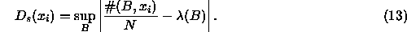
Here B is any rectangular subvolume inside the s-dimensional unit cube
with sides parallel to the axes and volume 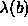.
The function 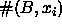 counts the number of
points of in B.
Hence a set of points with a low discrepancy covers the unit cube more uniformly
than one with a large discrepancy.
A lattice has a very low discrepancy, however adding additional points to the
lattice is slow in high dimensions.
The discrepancy of a lattice does not decrease smoothly with increasing N.
A remarkable fact is that there is a lower (Roth) bound to the
its discrepancy [39]:
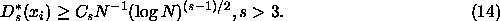
This gives us a target to aim at for the construction of low-discrepancy point
sets (quasi-random numbers). For comparison, the estimated error with
random sequences is:
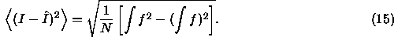
The quantity in brackets, the variance, only depends on f.
Hence the standard deviation of the Monte Carlo estimate is
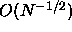. This is much worse than the bounds of Eq. ( ) as a function of the
number of points.
It is this fact that has
motivated the search for quasi-random points.
) as a function of the
number of points.
It is this fact that has
motivated the search for quasi-random points.
What goes wrong with this argument as far as most high-dimensional
problems in physical science is that the Koksma-Hlwaka bound is
extremely poor for large s. Typical integrands become more and more
singular the more one differentiates. The worse case is the
Metropolis rejection step: the acceptance is itself
discontinuous. Even assuming V(f) were finite, it is likely to be so
large (for large s) that truly astronomical values of N would be
required for the bound in Eq. ( ) to be less than the MC
convergence rate given in Eq. (
) to be less than the MC
convergence rate given in Eq. ( ).
).
We will now present a very brief description of quasi-random
sequences. Those interested in a much more detailed review of the
subject are encouraged to consult the recent work of Niederreiter [25]. An example of a one-dimensional set of quasi-random
numbers is the van der Corput sequence. First we choose a base, b,
and write an integer n in base b as 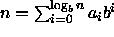. Then we define the van der Corput sequence as
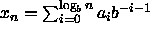. For base b=3, the first
12 terms of the van der Corput sequence are:
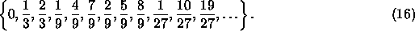
One sees intuitively how this
sequence, while not behaving in a random fashion, fills in all the
holes in a regular and low-discrepancy way.
There are many other low-discrepancy point sets and sequences. Some, like the Halton sequence [40] use the van der Corput sequence. There have been many others which are thought to be more general and have provably smaller discrepancy. Of particular note are the explicit constructions of Faure [41] and Niederreiter [42].
The use of quasi-random numbers in quadrature has not been widespread because the claims of superiority of quasi-random over pseudo-random for quadrature have not been shown empirically especially for high dimensional integrals and never in MCMC simulations [43]. QRNs work best in low dimensional spaces where the spacing between the points can be made small with respect to the curvature of the integrand. QRNs work well for very smooth integrands. The Boltzmann distribution 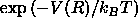 is highly peaked for R a many dimensional point. Empirical studies have shown that the number of integration points needed for QRN error to be less than the MC error increases very rapidly with the dimensionality. Until the asymptotic region is reached, the error of QRN is not very different from simple MC. Also there are many MC tricks which can be used to reduce the variance such as importance sampling, antithetic sampling and so forth. Finally MC has a very robust way of estimating errors; that is one of its main advantages as a method. Integrations with QRNs have to rely on empirical error estimates since the rigorous upper bound is exceedingly large. It may happen that the integrand in some way correlates with the QRN sequence so that these error estimates are completely wrong, just as sometimes happens with other deterministic integration methods.
There seem to be some advantages of quasi-random over pseudo-random for simple smooth integrands that are effectively low dimensional (say less than 15 dimensions), but they are much smaller than one is lead to expect from the mathematical results.